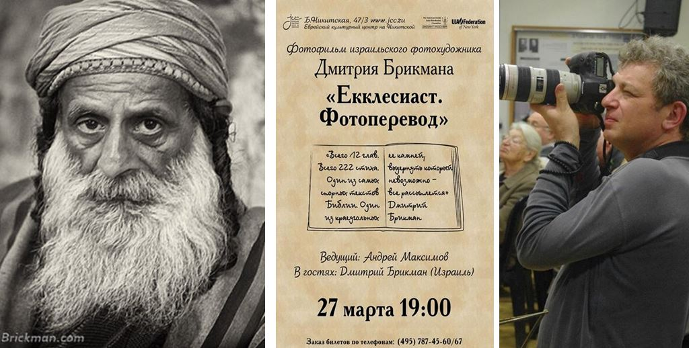
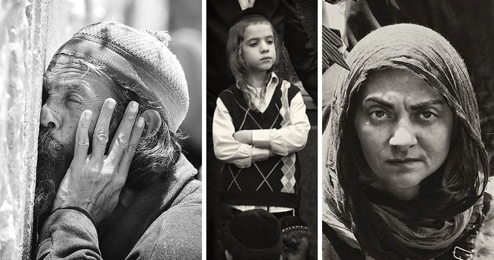
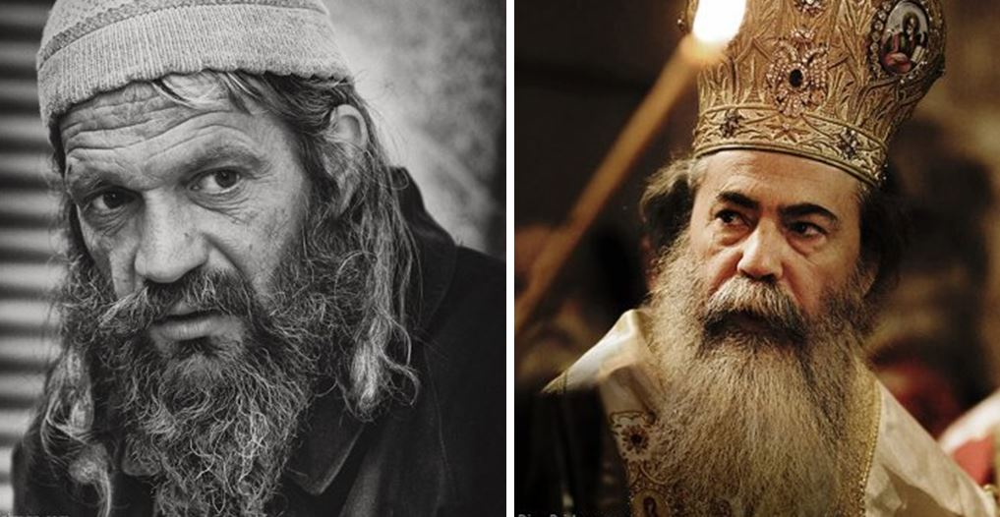
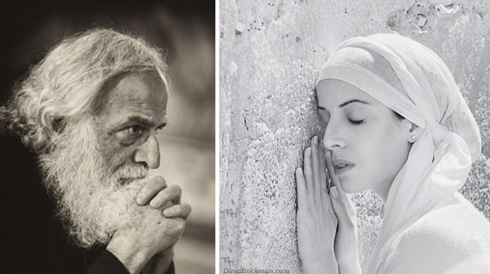
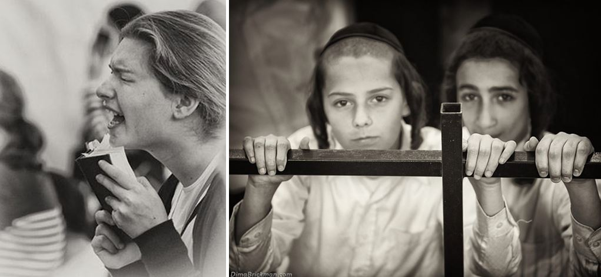

Екклесиаст. ФОТОПЕРЕВОД Дмитрия Брикмана
Вопрос осмысления Священных Еврейских Писаний творчеством особенно интересен. Думаю, это одна из важнейших функций искусства - исследовать и толковать Библию.
Хочу представить вам творчество Дмитрия Брикмана. Я не так давно открыл его для себя и хотел бы обратить ваше внимание на конкретный его проект «ЕККЛЕСИАСТ», который показался мне очень интересной попыткой интерпретировать Библию через искусство, в данном случае - через фотографию.
автор ДМИТРИЙ Брикман
Я прочел впервые эту книгу, когда мне подкатило к сорока. Разумеется, читал я ее и раньше, но прочел впервые именно тогда. Между "читать" и "прочитать" есть разница. Человек не видит того, чего не знает и не понимает. К сорока, по-видимому, что-то стало для меня в этой жизни проясняться и наводиться на резкость. Прочел, перевернул последнюю страницу и минут двадцать сидел с закрытыми глазами. Потом открыл и прочитал ее снова. От начала и до конца. Всего 12 глав. Всего 222 стиха. Один из самых спорных текстов Библии. Один из самых человечных ее текстов. Один из краеугольных ее камней, выдернуть который невозможно – все рассыплется. Чувство было такое, будто сижу в прокуренном шумном баре, и слушаю исповедь незнакомого мне человека с раздробленным глубокими морщинами лицом. Человека, который увидел, пережил и понял многое и не потерял при этом способность чувствовать, сострадать и любить жизнь и людей. С того момента я возвращался к этому тексту часто. Не ежегодно. И, даже, не ежемесячно. Значительно чаще.

Долгое время фотография и "Екклесиаст" в моей жизни не пересекались. По крайней мере, мне так казалось. В движении человека по линейке под названием жизнь, одновременно происходит много, на первый взгляд не пересекающихся событий. И тем не менее, довольно часто, когда я, глядя в видоискатель камеры, нажимал на кнопку затвора, или когда потом дома в спокойствии смотрел отснятый материал, проскакивало такое чувство или, если хотите, ощущение, что увиденный образ мне откуда-то очень знаком. Не человек и не мизансцена, а именно образ. Странное чувство. Яркое и расплывчатое одновременно. Чем-то напоминающее попытку вспомнить приснившийся ночью сон. Чувство, как правило, быстро размывалось и исчезало. Все это продолжалось довольно долго и, в общем-то, меня не сильно беспокоило: мало ли не очень понятных ощущений и эмоций пробегают за день в душе человеческой. Пробегают, как нам кажется, бесследно. Впрочем – это только кажется. Бесследно ничего не бывает.

Все встало на свои места в одно мгновение – вместе со щелчком затвора фотоаппарата. Судьба привела меня в китайский город Макао. Много туристов, много магазинов с чем-то ненастоящим, много гостиниц с пластиковой роскошью, много суеты. Этакий китайский двойник Лас-Вегаса. Но, в отличие от его американского прототипа, в Макао есть Старый город. Настоящий. Оказавшись в нем под вечер, я присел на камень в углу небольшой площади, чтобы поменять карточку в аппарате и, заодно, в спокойствии оглядеться вокруг. Мимо неторопливо текла людская река. На выходе с площади она делала, без видимой на первый взгляд причины, небольшую петлю и уходила за угол. Я пригляделся. Недалеко от угла на каменных ступенях сидел немолодой мужчина. Именно его и обтекала осторожно река. Бывают такие люди, вокруг которых в самой густой толпе остается уважительное свободное пространство. Редко, но бывают. Приблизив его изображение, я навел картинку на фокус и нажал на кнопку затвора. Лицо мужчины было раздроблено глубокими морщинами…
...Вернувшись домой, я просмотрел свои старые фотографии, которые, как мне кажется, состоялись. Иными словами, те, которые подписи, поясняющей их, не требуют. И, практически, в каждой из них обнаружилась или прямая цитата из "Екклесиаста" или образ, нарисованный им. Образов было больше. Собственно говоря, их и в самом тексте больше, чем прямых определений. Непонятное ранее чувство навелось на фокус и обрело имя.

Перед Вами… Я затрудняюсь в подборе слова. Наверное, это все-таки перевод. Просто необычный. Или, точнее, непривычный. И, что самое важное, неоднозначный. Странное такое словосочетание – неоднозначный перевод. Взаимоисключающее. Но сначала - о непривычности. Заключается она в том, что в дополнение к обычному человеческому языку, в нем использован язык фотографии. Переводить "Екклесиаста" используя словесные формулировки очень сложно. Не то, что с иврита на другие языки. Он и с иврита на иврит-то, как это ни парадоксально звучит, плохо переводится – за тысячелетия, прошедшие с момента его написания, связки образы - слова размылись, сменили цвета, а иногда и просто поменялись до неузнаваемости. И это в случае попытки осознания текста, если можно выразиться, на родном его языке. А уж что тогда говорить про языки неродные. Любой перевод автоматически переходит в толкование текста в системе жизненных ценностей и координат переводчиков, которые далеко не всегда совпадают с системой читателя. И это отнюдь не ошибка переводчиков или их вина. У них просто нет иного выбора. Художественный образ словами описать невозможно. Образ, как и систему жизненных координат, каждый человек должен осознавать и строить для себя сам. Если уж быть точнее, то не должен, а имеет право.

А теперь - о неоднозначности перевода. Каждая фотография, используемая в нем, в той или иной форме привязана к тексту. Иногда это прямая и легко читаемая цитата, а иногда… даже не образ. Скорее - ощущение. И было бы вполне логично, исходя из правил действия под названием перевод, поставить под каждой фразой однозначно соответствующий ей, по моему мнению, снимок. Но я не стану это делать, поскольку в этом случае получилось бы как раз то, о чем было сказано ранее – толкование этой Книги в системе жизненных координат конкретного человека. А мне никоим образом не хотелось бы, даже косвенно, воздействовать на Ваше осознание и восприятие Книги и лишать Вас возможности создать свой собственный перевод, свободный от ограничений, неизбежно накладываемых на этот процесс использованием в нем слов.
Перевод разбит на главы. В соответствии с "Книгой Екклесиаста или Проповедника" их двенадцать. Когда Вы откроете главу, Вы услышите текст и увидите перетекающие друг в друга фотографии. Иногда они могут совпадать с образами из текущей главы, а иногда могут быть связаны с другими главами. Это совершенно не важно, поскольку связи основаны на моих внутренних ощущениях и ассоциациях, а у Вас, я надеюсь, возникнут свои. В качестве текста использован синодальный перевод Библии. Не потому, что он самый лучший. На мой взгляд, есть и более удачные. Причина - в другом. Существует такое замечательное русское выражение – намоленное место. Так вот, этот перевод, как мне кажется, самый намоленный. Хотя одну поправку к нему я все же позволю себе сделать. Знаменитое "Суета сует". В иврите используется слово "эвель". Нет однозначного перевода этого образа на русский язык. "Выдох", "пар изо рта"… Самое близкое по смыслу, наверное, будет перевести как "не важное", "пустое", "ничто".
Переводить Екклесиаста, используя словесные формулировки, очень сложно, не то что с иврита - на другие языки. Он и с иврита - на иврит, как это не парадоксально звучит, плохо переводится. За тысячелетия, прошедшие с момента его написания связки образа, слова размылись, сменили цвета, а иногда и просто поменялись до неузнаваемости.
И это в случае попытки осознания текста, если можно так выразиться на родном его языке. А что говорить тогда про языки не родные? Любой перевод автоматически переходит в толкование текста в системе жизненных ценностей координат переводчика. Который далеко не всегда, кстати говоря, совпадают с системой читателя. И это отнюдь не ошибка переводчиков, или их вина. У них просто нет иного выбора.
Художественный образ словами описать невозможно. Образ, как и систему жизненных координат, каждый человек должен осознавать и строить для себя сам. Если быть точнее, то не должен, а имеет право.
Здесь вы можете посмотреть по главам Фотоперевод Дмитрия Брикмана + комментарии на книгу его друзей.
Екклесиаст. ФОТОПЕРЕВОД Дмитрия Брикмана
И последнее. Каждая глава начинается с фотографии, а точнее с образа мужчины. Назовем его Автор. Мы не знаем, как он выглядел. Собственно говоря, не известно даже и кто он. По библейской версии, автор - царь Соломон. Но, скорей всего, это не так. Мы не знаем о нем практически ничего. Книга, собственно говоря, и об этом тоже: «Мудрого не будут помнить вечно, как и глупого; в грядущие дни все будет забыто, и увы! мудрый умирает наравне с глупым.» (2.16) Иногда мне кажется, что Проповедник был зрелым мужчиной, а иногда – глубоким стариком. Иногда кажется, что он был весел, а иногда, что угрюм. Иногда, что богат, а иногда, что беден. Этот образ каждой главы – единственный, которому я позволил себе дать определение. Остальное – решать Вам. А теперь давайте приступим к переводу. И я очень надеюсь, что он у Вас получится. У каждого – свой. И у каждого - о своем.

другие фото Дмитрия Брикмана см. на DimaBrickman.com